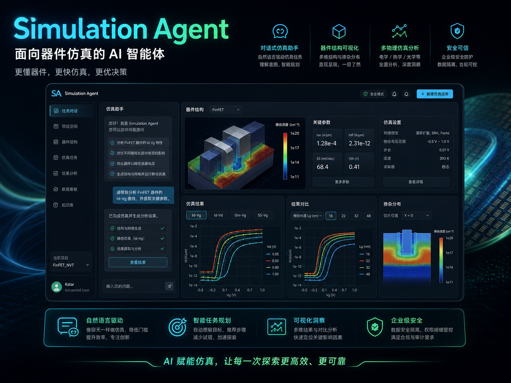
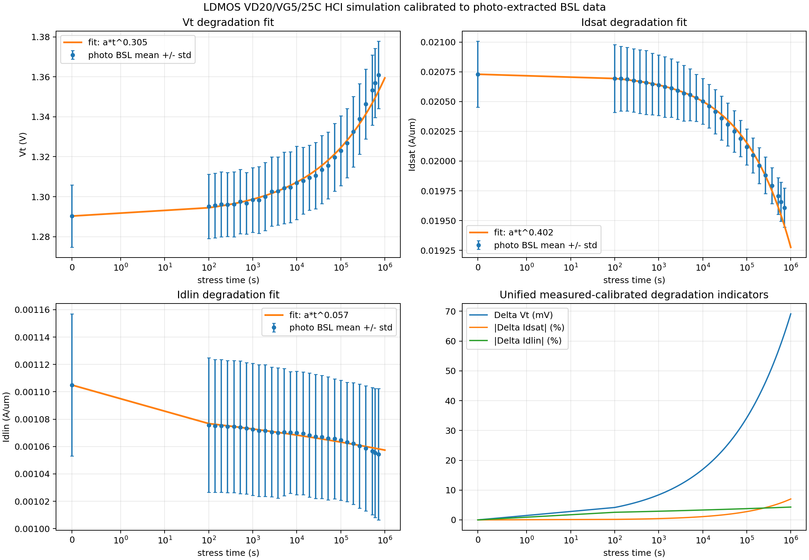
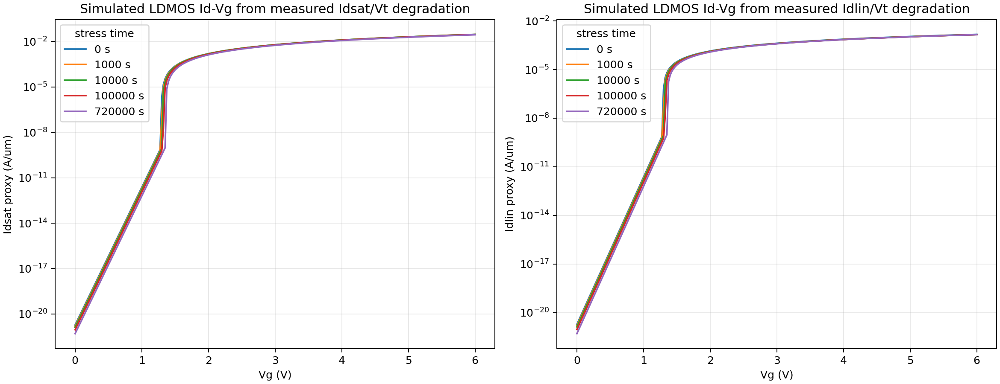

Simulation Agent Prototype
面向器件仿真的 AI 智能体
探索自然语言如何进入器件仿真协作过程，把工程意图转化为建模、求解与结果解读线索，当前以前端展示与产品化表达为主。



展示说明
这个页面只保留产品介绍层，用来展示面向器件仿真的交互方向、结果视图和使用场景。非公开实现细节不在此页面展开。
备注：当前仍在开发完善中，现阶段公开页面主要用于展示产品方向。
Simulation Agent Prototype
探索自然语言如何进入器件仿真协作过程，把工程意图转化为建模、求解与结果解读线索，当前以前端展示与产品化表达为主。



这个页面只保留产品介绍层，用来展示面向器件仿真的交互方向、结果视图和使用场景。非公开实现细节不在此页面展开。
备注：当前仍在开发完善中，现阶段公开页面主要用于展示产品方向。